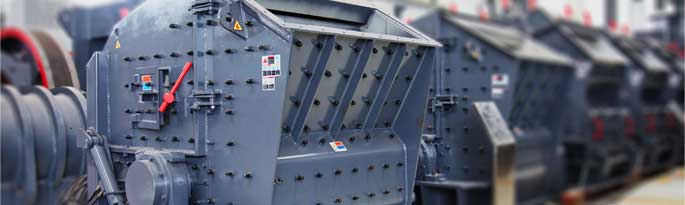

PFW Impact Crusher
The European version of our PFW series impact crusher has the design principle, a novel by the new concept of crushing technology, can meet the requirements of new technology of more crushing and less grinding ", when the use of impact energy to crush materials usually used in crushing, crushing, crushing and fine crushing of limestone, gypsum and other hard the following materials with feed specifications, product grain shape good uniformity, high capacity, low power consumption and unit, mechanical wear small, easy maintenance, save the project cost, so it has good application prospect in large engineering project.
In the crushing machine market, the scope of application of back breaking is very wide, broken links in the industries of metallurgy, construction, road building, chemical, it can be very good to complete the crushing work, provides assistance to the development of the industry.
After a long period of hard, the world state staff to update and improve the back breaking, making it more prominent features. Especially after improvement, material hardness is more widely applicable. Board hammer it with solid mechanical clamping structure fixed on the rotor, when the rotor rotates, a great moment of inertia. Relative to the hammer crusher, the rotor has a greater momentum, to break more hard materials, at the same time, its energy consumption is low, so it increases the range of use characteristics.
Working Principle of Impact Crusher
Impact crusher is a high efficiency crusher, for processing, chemical, cement, refractory materials and building materials industry for crushing and fine crushing of all kinds of materials, such as limestone and other medium hardness ore. Because it has a big crushing ratio, feed particle size, high yield, has been widely used in crushing operations and instead of the amount of crusher and cone crusher, counterattack crusher or use a broken replace other crusher two stage crushing process.
Counterattack crusher working parts of machines with high-speed rotation of the rotor plate hammer for feeding machine in the range (rotary hammer District) by rust impact plate. The material is the guide to hammer area, block in hammer throw up; high speed bump in the back plate, hit again, then from the back Shan back plate plate hammer, continue to repeat the above process. In a round trip, the material collide with each other, in the impact, rebound, collide with each other under the action of the material block, constantly cracks, loose finally broken. The broken material discharged from the lower part of the body.
Counterattack crusher crushing machine has the following three points:
(1) Free crushing. In the crushing cavity material immediately by the plate hammer impact. The friction material between the impact plate between the hammer and the material, and the material and the material, because of the effect of the material crushing.
(2) Bounce broken. In fact, the crushed material is not unlimited, decentralized, and concentrated in the body due to the high speed hammer impact, so that the materials are moving with a high speed, and then hit the back plate, thus further crushing material. This fragmentation function is called a rebound effect.
(3) The milling effect. After the above two kinds of crushing effect is not broken than that feed size material, the material is in high-speed rotation of the hammer milling and crushing. The crusher can be divided into single, double rotor rotor two categories.
Features
- 1. The grain size is convenient to adjust. The crusher can be through a variety of ways to adjust the size of material, such as rotor speed control, back plate and grinding cavity gap, can effectively adjust the material. The hydraulic adjustment system by local operation button or control system, complete the clearance adjustment; adjusting the gap can be adjusted by mechanical or hydraulic in two ways.
- 2. Equipped with a replacement is simple, the maintenance cost reduction. 6 plate hammer, install only the back breaking on the rotor at the same time, in the process of use, the replacement can be conveniently plate hammer, so that it can improve the work efficiency.
- 3. Wearing parts wear small. The wear state of the world back breaking only appear in towards the material side. When the rotor speed is normal, the feed will fall to the surface of the plate hammer, but the hammer back and sides are not to be worn. After improvement, the bottom of the grinding rod it is easy to change.
Technical Data
| Model | Rotor Φ×L (mm) | Feed Opening (mm) | Max Feeding (mm) | Capacity (t/h) | Power (kw) | Motor Model | Machine Size (mm) |
| PFW1214II | Ф1150×1400 | 1100×1430 | 500 | 130-200 | 4-132 | Y315M-4/132 | 2400×2310×2550 |
| PFW1315II | Ф1300×1500 | 1200×1530 | 600 | 180-320 | 4-160 | Y315L1-4/160 | 2700×2570×2800 |
| PFW1318II | Ф1300×1800 | 1200×1830 | 700 | 240-400 | 4-200 | Y315L2-4/200 | 2700×2870×2800 |
| PFW1415II | Ф1400×1500 | 1450×1530 | 800 | 240-450 | 4-200 | Y315L2-4/200 | 3000×2700×3070 |
| Model | Rotor Φ×L (mm) | Feed Opening (mm) | Max Feeding (mm) | Capacity (t/h) | Power (kw) | Motor Model | Machine Size (mm) |
| PFW1214Ⅲ | Ф1150×1400 | 570×1430 | 250 | 90-170 | 4-132 | Y315M-4/132 | 2550×2310×2100 |
| PFW1315Ⅲ | Ф1300×1500 | 625×1530 | 300 | 180-270 | 4-160 | Y315L1-4/160 | 2960×2570×2380 |
| PFW1318Ⅲ | Ф1300×1800 | 625×1830 | 300 | 220-300 | 4-200 | Y315L2-4/200 | 2960×2870×2380 |
| PFW1415Ⅲ | Ф1400×1500 | 800×1530 | 350 | 280-350 | 4-200 | Y315L2-4/200 | 3120×2650×2660 |


Request for Quotation
You can get the price list and a MCC representative will contact you within one business day.